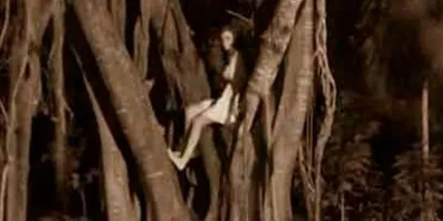

La Xtabai

La Xtabai es una de las leyendas más antiguas relacionadas con la selva y las creencias mayas de Belice. Se dice que aparece especialmente en caminos rodeados de árboles enormes o cerca de ríos donde casi no llega la luz de la luna. Muchos la describen como una mujer increíblemente hermosa, con un cabello largo y oscuro que parece moverse con el viento incluso cuando todo el bosque está en absoluto silencio.
La leyenda cuenta que los hombres escuchan primero una voz dulce o un canto lejano antes de verla sentada sobre una roca o caminando descalza entre los árboles. Ella parece tranquila y amable, lo que hace que las personas se acerquen sin miedo. Sin embargo, mientras más cerca están, los sonidos de los animales desaparecen, el aire se vuelve gélido y el camino comienza a cambiar de forma inexplicablemente.
Quienes intentan seguirla terminan perdiéndose durante días en la selva. Algunos sobrevivientes afirman que, en el momento final, ella gira lentamente la cabeza para revelar un rostro monstruoso con ojos negros y una sonrisa imposible. Se cree que la Xtabai castiga especialmente a hombres infieles o arrogantes, aunque también protege los lugares sagrados antiguos de quienes entran sin el debido respeto.